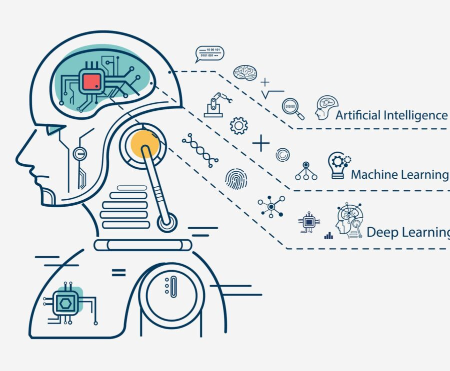

Technical interests
Web development
I'm interested in building websites that will be for everyone. I want to develop such websites which would help every individual for their daily tasks. Websites with good structure, clear labels and strong colour contrast and with good graphical design and workflow for all user.
I also want to learn how I can minimize my errors during web development more effictively and efficiently.

Machine learning
As much as I enjoy web developing I also love machine learning. I would like to learn how it its works and how it store, records and recognizes data.
Next, I'd also like to explore its basics and supervised learning, unsupervised learning, and reinforcement learning can be carried out.